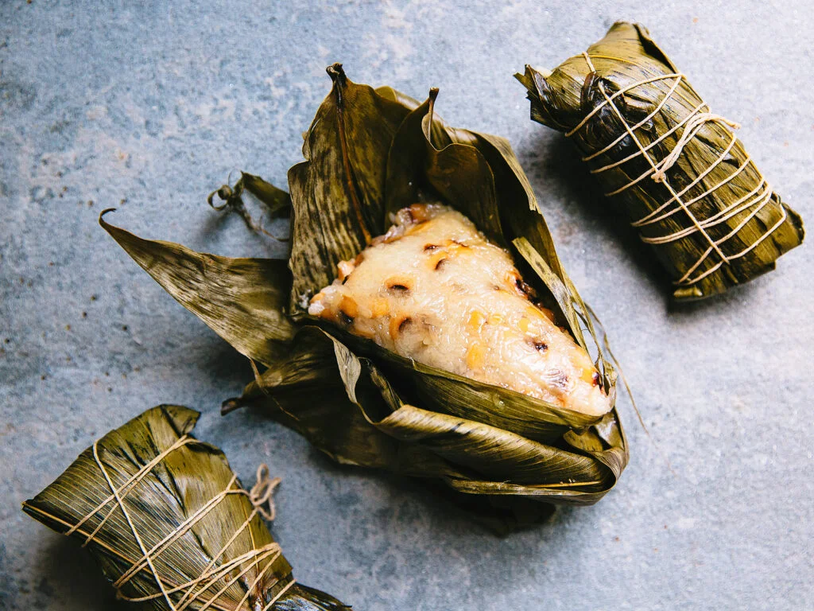

Zongzi is a Chinese snack made with glutinous rice that is stuffed with various ingredients, wrapped in reeds, lotus, bamboo, or similar large flat leaves, then steamed or boiled. Each type of leaf imparts a unique flavor and aroma to the rice. Common fillings include both savory and sweet ingredients such as yam, boiled peanuts, hard-boiled eggs, mushrooms, chicken, red bean paste, pork, and vegetables. Zongzi is most often consumed during Dragonboat Festival (Duanwu Festival).
Meal prep time : 1 day 2 hours
Servings : 15